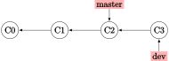
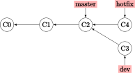

分支：branch
总是在一个分支上工作不是正确的 git 使用方式。通常，我们在研发分支工作，频繁地进行推送；每当累计更新到一个较稳定的版本，我们才会向 master 分支合并。还记得每个 commit 都是快照吗？事实上，每个 commit 也有一个指向本分支前一次 commit 的指针,而 git 通过一个名为 “HEAD” 的指针，来标记当前处于哪个分支。
分支的特性有多重要呢？我认为， 不了解分支，不足以谈用过 git。 这也是将分支单独作为一章的原因。
需要指出：“master” 并不是一个特殊的分支；只不过 git init 命令会自动创建一个名为 master 的分支作为初始分支，而大多数用户都懒得去改动它。
创建分支
创建一个名为 dev 的分支（我通常将开发分支叫这个名字）：
$ git branch dev
git 通过 HEAD 指针管理“当前分支”。我们以 log 命令的返回信息来说明什么是当前分支：
$ git log --oneline
b895843 (HEAD -> dev, origin/dev) GitLearning: Update to 'tag' section.
def0a06 Git: Init.
36e8d6b Update README.
bae6fc8 (origin/master, master) Init
以上输出结果说明 HEAD 指向 dev 分支，而 master 分支停留在之前的位置。上面提到的 orign/... 分支是指被推送到了远程 origin 仓库的分支。
切换分支：checkout
切换到一个已有的分支：
$ git checkout dev
要新建一个分支并切换过去，添加 -b 选项：
$ git checkout -b test
合并分支：merge
重要
合并分支是 Git 使用的重中之重。
我们通过一个例子来了解分支合并。这个例子来自与官方手册，有改动。
假设你拥有一个仓库，master 分支有 3 个提交，而你正在 dev 分支上工作：
{kind=link}
注意到你的 dev 分支此时是领先于 master 分支的。这时，你接到一个 issue 17，说你的 master 分支有一个问题需要立刻修复，因此你不得不切换分支去解决它。你的做法是回到 master 分支，新建一个 hotfix 分支（假设你的 dev 工作目录的改动都已经提交；我们稍晚再来讨论存在文件未提交的情况）：
$ git checkout master
$ git checkout -b hotfix
... (在 hotfix 分支修复了问题)
$ git commit -a -m "Fix issue #17."
此时分叉（diverge）就出现了，你的 hotfix 分支修复后，指针位于 C4:
{kind=link}
既然 hotfix 分支完成了它的使命，那么就需要将它的内容 merge 到 master 分支，并在成功合并后删除它：
警告
这只是最普通的合并分支做法；关于如何选择恰当的工作流（workflow）来规范管理与协调各个分支，请参考 分支工作流 这一节的内容。例如，有许多工作流并不推荐使用 fast-forward 合并。
$ git checkout master
$ git merge hotfix
$ git branch -d hotfix
该合并是一个典型的 fast-forward 合并，即发生合并操作的两个分支之间没有分叉（即 master 没有在 C2 之后的提交；此时合并操作只需要确认无冲突后，移动 master 指针到 hotfix 指针所在位置即可）。
好了，现在你完成了 issue 17 的热更新，继续回到你的 dev 分支工作。不多久，你完成了你在 dev 分支的工作，也就是提交 C5：
$ git checkout dev
...
$ git commit -a -m "New features & bugs: ..."
注意到 master 位于 C4 而不再是 C2，这是因为与已被删除的 hotfix 分支合并过：

现在需要开始一次新的合并了，切换到 master 分支以进行合并：
$ git checkout master
$ git merge dev
这次分支合并主要涉及到三个提交点，在上图中已经标出：
C4：master 分支当前位置；
C5：dev 分支当前位置；
C2：两个分支的共同祖先（common ancestor）。
此时的合并是一个三方合并（three-way merge）,无法通过简单地移动指针来完成。因此，git 会新建一个合并提交（merge commit）C6，其特点是拥有两个父提交。

由于我们在 master 分支上进行合并，因此 C4 称为第一父提交，C5 称为第二父提交。
删除分支：branch -d
如果没有冲突（单人工作时往往不会产生冲突），就能成功合并。上例合并后，你可以删除 dev 分支。
$ git branch -d dev
要删除未合并过的分支，使用 -D 选项代替 -d 选项。
要删除远程仓库中的分支，使用带 --delete 选项的 push 命令。比如，删除 origin 远程仓库中的 issuefix 分支：
$ git push origin --delete issuefix
查看分支列表：branch -v
使用 git branch 命令查看分支列表，带“*”的是当前分支（即 HEAD 所在分支）：
$ git branch
* dev
master
使用 -v 选项来查看每个分支的最后一次提交：
$ git branch -v
* dev e6c4681 Attempt to fix center-aligning of picture in Markdown.
master bae6fc8 Init
使用 --merged 选项以只显示完全合并到当前分支的分支。这个列表中的分支与你的当前分支没有分叉，且落后于当前分支；无特殊情况下，它们可以被删除（比如上文的 hotfix 分支已完全合并到 master 分支，可以删除）。--no-merged 选项则相反。
$ git branch --merged
$ git branch --no-merged
注意：如果你尝试用 -d 选项删除分支，但这个分支位于 --no-merged 列表中，git 会阻止你的删除操作（因为这意味着这个分支中的工作会丢失）。不过你总能使用 -D 选项来强制进行删除操作。
最后，使用 -vv 选项可以查看跟踪（上游）分支的信息。关于跟踪分支，参考 远程：跟踪分支（上游分支） 一节。
远程：跟踪分支（上游分支）
跟踪分支也叫上游分支。当你从远程仓库克隆了分支，你的这个本地分支会自动设置为跟踪该远程仓库的对应分支。这是你就可以使用 git pull 命令方便地进行本地仓库更新（参考 抓取与拉取：fetach & pull 部分的内容）。
如果你的需要手动设置本地分支跟踪远程分支，一种方法是使用带 --track 参数的 checkout 命令来新建一个本地分支，并使其跟踪远程分支：
$ git checkout --track origin/issuefix
这个操作会在本地创建一个 issuefix 分支，并设置其跟踪 origin 远程仓库中的对应分支。实质上，该命令是下面这条命令的简写：
$ git checkout -b issuefix origin/issuefix
更改紧跟 -b 选项后的 issuefix，就能将本地分支设置成另外的名称。
另一种设置跟踪分支的方法是使用 branch 命令的 --set-upstream-to/-u 参数：
$ git checkout -b dev
$ git branch -u origin/dev
如果不想切换到 dev 分支操作，你也可以在其他分支使用类似第二行的命令，只不过要在末尾额外添加一个分支名：
$ git branch -u origin/dev dev
设置了跟踪后，用 @{upstream} 或 @{u} 来指代远程分支。例如，在你设置 issuefix 分支跟踪对应远程分之后，你可以使用 git merge @{u} 代替 git merge origin/issuefix。
在上文已经介绍过，可以通过 branch 命令的 -vv 选项来查看跟踪分支的信息：
$ git branch -vv
* dev e6c4681 Attempt to fix center-aligning of picture in Markdown.
master bae6fc8 [origin/master] Init
以上表示我的 dev 分支尚未设置跟踪远程分支。
冲突处理
在合并分支时，如果存在分叉，那么可能会有冲突（conflict）。冲突是指在不同的分支中，同一个文件的同一部分（比如同一行）被以不同的方式修改了。此时如果使用 git merge 命令，git 会在检测到冲突后自动暂停合并，弹出合并工具界面，等待用户解决。
参考官方手册得来的一个冲突提示样例：
<<<<<<< HEAD:index.html
<div id="footer">contact : email.support@github.com</div>
=======
<div id="footer">
please contact us at support@github.com
</div>
>>>>>>> dev:index.html
上述信息表示，HEAD 指针指向的版本（目前在 master 分支上，因为之前我们在尝试进行合并操作之前切换到了 master 分支）的内容如 “=======” 上方的内容所示；而 dev 分支的同一部分内容却如其下方所示.
要解决冲突，通常的做法是选择其中一个分支保留（当然，你也可以自行输入内容）：
确定要保留哪个分支的内容；
将 "=======" 另一侧的所有行删除；
将 "<<<<<<<", "=======" 与 ">>>>>>>" 所在的行删除。
例如，上文如果要保留 dev 分支的内容，那么就更改为：
<div id="footer">
please contact us at support@github.com
</div>
然后你可以退出合并工具界面了，告诉 git 已经解决了冲突。
想了解更复杂的冲突处理，参考 高级合并与冲突处理 部分的内容。
分支工作流
重要
选择一个合适的分支工作流是高效管理项目开发的重要步骤。
不同的项目可能适用不同的分支策略（branching scheme）。本文主要介绍 Git workflow 与 Github workflow 两种工作流。
Git 工作流
Git Workflow 总是维护 master （稳定分支，供生产环境使用）与 dev （开发分支）两个长期分支。这种工作流的开发历史非常清晰，适用于以提供新功能为主的产品发布。

Git 工作流中推荐使用 --no-ff 参数进行分支合并，即“非 fast-forward 式”合并。这样 master 与 dev 的分支历史都能得到较好的保留。图源： A successful Git branching model 。
Git 工作流还建议使用三种支持性的分支，分别是：
特性分支（Feature branches）：用来添加特性。这类分支从 dev 分支分岔出来，并在合适的时候合并回 dev 分支（或者被抛弃）。特性分支 不应当被推送到远程仓库 。一个典型的特性分支操作流程是：
# 新建特性分支进行开发 $ git checkout feature-foo $ git commit ... # 合并回 dev 分支 $ git checkout dev $ git merge --no-ff feature-foo # 删除本地 feature 分支，并将本地 dev 分支推送到远程 $ git branch -d feature-foo $ git push origin dev
发布分支（Release branches）：用来确定分布版本，一般以 release-x.y.z 来命名。发布分支上可能进行较小的修复，以及元数据的更新（比如版本号）。一个典型的发布分支操作是：
# 新建发布分支 $ git checkout -b release-1.1 $ ./update-version.py 1.1 # 一些元数据更改 $ git commit -m "Update to v1.1" # 合并到 master 并添加标签，以完成发布 $ git checkout master $ git merge --no-ff release-1.1 $ git tag -a 1.1 # 将这部分更改更新到 dev 分支 $ git checkout dev $ git merge --no-ff release-1.1 ... (修复可能存在的冲突) $ git branch -d release-1.1
热修复分支（Hotfix branches）：热修复分支是从 master 分支分岔出的，为了对生产环境（即 master 分支）的问题进行修复。因此，它在结束时会被直接合并到 master 分支来完成热修复。它一般用 hotfix-x.y.z 的方式命名，并在完成后更新生产环境的版本号。
# 新建热修复分支，指定从 master 分岔 $ git checkout -b hotfix-1.1.1 master # 记得更新版本号元数据 $ ./update-version.py 1.1.1 $ ... (进行热修复) $ git commit -m "Hotfix a severe bug of ..." # 将热修复分支部署到 master 分支生产环境，并添加标签 $ git checkout master $ git merge --no-ff hotfix-1.1.1 $ git tag -a 1.1.1 # 将热修分分支的更新合并到 dev 分支（或发行分支，视情形而定） $ git checkout dev $ git merge --no-ff hotfix-1.1.1 $ git branch -d hotfix-1.1.1
Github 工作流
作为 Git 工作流的简化， Github Workflow 仅维护 master 这一个分支作为长期分支。每次需要更新，都从 master 分支分岔出一个新的分支，并在新的分支工作完成后，合并回 master 分支（之后该新分支就可以删除）。在多人项目中，在把新分支合并回 master 分支前，往往需要提交 pull request 并与其他人讨论新分支的代码。
Github 工作流适合于版本号不重要或功能滚动更新的产品（例如网站）。这类产品的 dev 分支以极高的频率向 master 分支合并，因此两者 的差异并不大，无须维护两个长期分支。
变基*：rebase
注解
本节是一个选读章节，内容的实用性可能不高。我个人基本不使用变基操作。
变基实质上是与三路合并操作相关的一个操作，不过一般来说并不常用。
变基的使用场景
简单地说，变基修改了版本历史，将不同分支的提交在后期用移花接木的方式加入到主分支中去，使得主分支之外的分支仿佛从未出现过。还是上文的那个例子：假设 master 分支上的提交 C4、dev 分支上的 C5、共同祖先 C2 需要处理合并问题，变基的做法是将 C3 和 C5 的内容与 C4 做比较，然后在 C4 之后新建一个新的包含 C5 中所有改动的 C5'。之前的 dev 分支就不需要再管了，整个项目在分叉点后依次是 C2, C4, C3', C5'，它们都位于 master 分支上。
变基的命令是 rebase ：
$ git checkout dev
$ git rebase master

上面的命令之后，dev 的指针指向 C5'，但 master 的指针仍位于 C4。因此还需要一个快进合并：
$ git checkout master
$ git merge dev
这样就算完成了基础的变基操作。
一个更复杂的变基场景是，如果说 dev 分支内部还有一个 next 分支，你想将 next 分支中的改动变基到 master，但不对 dev 分支进行操作。那么使用 --onto 选项：
$ git rebase --onto master dev next
变基的风险
重要
忠告： 不要对本地仓库外存在副本的分支进行变基 。
想象一下你拉取了一个远程仓库，做了一些改动，准备推送时却发现你的同事进行了变基操作并先于你推送了。你没有办法，只能重新取回仓库，尝试合并。
这会发生什么呢？变基操作实质上从历史中“清除”了一些节点，但由于你的本地仓库仍存在这些节点，你的第二次合并操作就会将这些节点重新加回到 git 快照中去。就像上一节的例子，你会既有已变基的 master 分支上的 C5'，又有 dev 分支（可能已经被你同事从远程仓库删除了）里的 C3 <- C5 这部分提交；你的 merge 操作会令人困惑，因为在别人看来 C5 和 C5' 的快照实质上是一模一样的。
最后的结果就是，你同事的变基操作没有任何效果，因为你又将 dev 分支的历史给加回去了。然后你把这乱糟糟的东西推送到远程仓库，大概没有人第二天能从提交历史中看懂你们两人究竟干了什么。
如果，我是说万一，你的同事真的做了这样的事情，你应该在第二次取回时使用 --rebase 选项：
$ git pull --rebase ...
但这个命令也不总是保险的；根本的解决办法是，统一团队的分叉处理方式： 要么都使用合并，要么都使用变基 。
变基改写日志
通过变基命令可以改写提交日志。它可以将多个提交压缩为一个，或者将一个提交拆分为多个。这里不展开介绍方法，但记住，使用交互式的命令并遵循提示将很容易完成：
$ git rebase -i HEAD~3
其中 HEAD~3 表示修改倒数第三次及以后的提交（但实际上会定位到它的父提交）。
合并与变基的争论*
有的开发者认为，合并能够还原真实的开发流程，因此我们应当使用合并操作——改变提交历史和撒谎没什么两样.
另一部分人则认为，没有人在意你们怎么开发的，应该让项目外的人查看你的仓库历史时能够迅速看懂（而不是迷失在一堆分支中）。提交历史就像一本使用手册，需要不断修订。如果新版本手册总是比旧版本要好，那旧版本手册当然应该被抛弃。因此他们支持变基。
这当然是一件没有获胜方的争论。坦白地说，我个人是合并的支持者，因为我认为变基会干扰开发思维的连贯性。